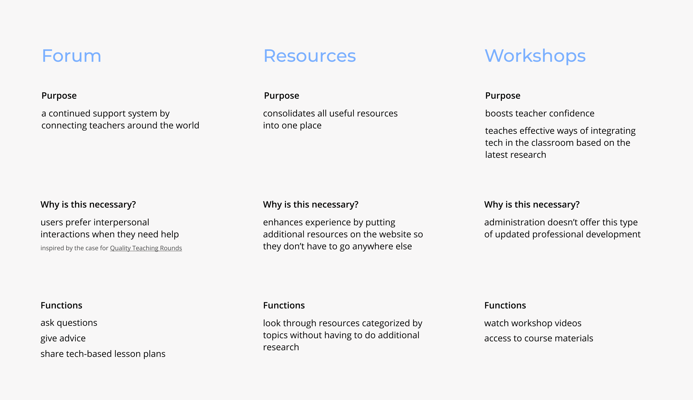
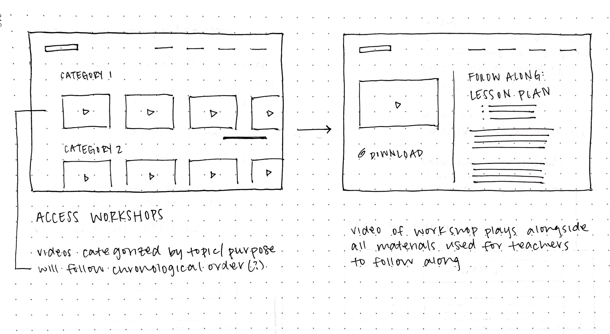

PROBLEM
Teachers are not effectively implementing new technology in their classrooms, which has serious repercussions for their students.
Although administration has the resources to provide teachers with new technology, they are not allocating enough resources to teaching teachers how to use that technology. School systems falsely rely on the excitement surrounding new technology rather than trying to create a lasting solution using that technology.
Deeper Problem Understanding
Since our target audience consisted of teachers, specifically in low-resource areas, it was difficult to contact that exact audience for interviews or user testing. Instead, we broke down our target audience into what they are fundamentally: adults who had minimal experience with technology who then needed to become more skilled for their jobs.
What we wanted to know: What resources did they have/use when pushed to transition into digital literacy?
- "When I first touched a computer, it was already self-explanatory because I had been watching other people and asking questions."
- "Technology was already very common so I was exposed to it even though I never really had to use it."
- "I just asked co-workers if I had any problems. I didn't need any other resources and I didn't want to use other resources"
Their responses may not be an accurate representation of our target audience. However, it was evident that both users preferred to talk to people instead of reading resources or books. This informs the motivation behind our forum - interpersonal interactions provide better support than the one way interaction between a teacher and a webpage.
SOLUTION OVERVIEW
Based on all our primary and secondary research, we settled on three main features:

EDUCATIONAL GOALS + ASSESSMENT
A large majority of our efforts this semester was put toward performing research on why such a platform should exist, rather than the platform itself. We created our prototype to demonstrate how our findings from research and interviews played into the design decisions for the features and layout of the platform.
Goals
- Incorporate technology in a way that supports the mandated curriculum
- Be comfortable using the new technology and/or seeking help through resources such as the social aspects of TeachIt
- Create effective technology-based lesson plans that engages students
Assessment
There is no formal assessment of the teachers’ skills - we would actually assess the impact of our platform by looking at the performance of their classrooms before and after the use of the platform. The platform should have a “trickle down” effect on the students’ learning as a result of helping and empowering the teachers.
STORYBOARDING

WIREFRAMING


FORMATIVE ASSESSMENT + REDESIGN
It was difficult to get people in our target audience to conduct user testing, so we did user testing with our peers. We briefed them on the purpose of the platform, and were told to think aloud as they navigated through our prototype. These are the comments they made about the prototype:
Comments from User Testing
- Would not be inclined to use the website without some type of administrative push
- Would not join the platform unless there was already information on there with many users
- Liked videos because it makes it easier to learn new concepts - prefer this to reading an article for example
- Liked that course materials were provided alongside workshops because it caters to different teacher learning styles
- Feed feels overwhelming - they suggested an overview of general threads at first
Future Design Considerations
- Redesign platform to be compatible with other devices
- Feed customization based on teacher preferences and searches
- Continuous evaluation of evolving technology to provide teachers with most current and relevant information.
- Expanding resources to account for widely used technology (i.e. iPads or tablets)
- Opportunity to use AI to better cater forum to teacher's needs and interests.
FINAL THOUGHTS
Get creative with your resources! Even without direct access to our intended end users, we still got a lot of good feedback through "think alouds" and finding people similar to our target population.
Doing sufficient research is important prior to starting any project to understand the market, successes, and failures of similar products in the same field. All of the decisions we made regarding the actual product was derived from research and user testing.
Education is SO important and should be made available and accessible to as many people as possible. I think growing up in this digital age, I easily forget how fortunate I was to have teachers who had technical competency.